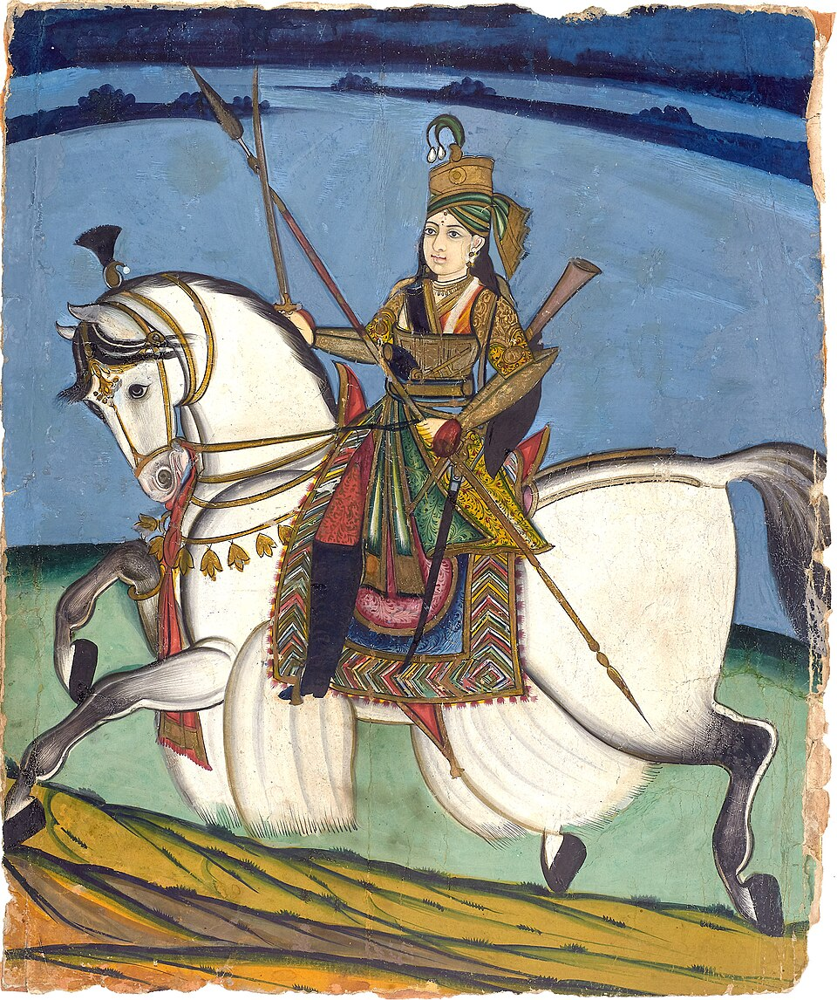
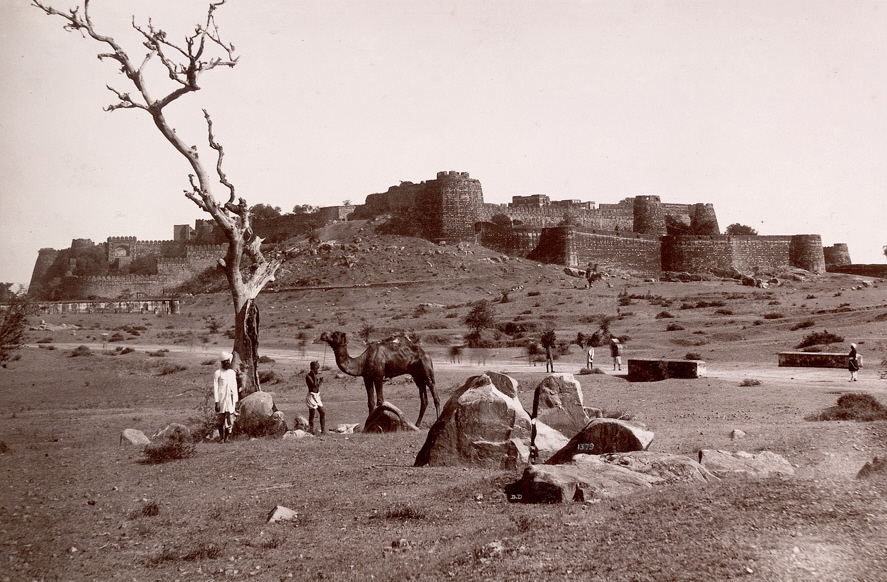
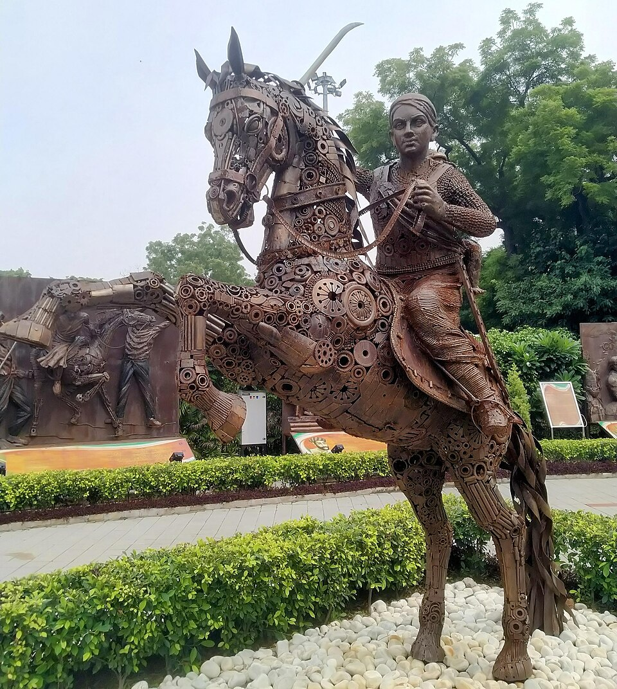

⏱️ 10초 카드 · 1857 인도 대항쟁 (1828?~1858)
잔시의 여왕세포이 항쟁저항전설과 사실
여는 질문 — 그 용기에 무엇을 묻고 싶나요? 그리고 전설과 사실은 어떻게 가려 읽을까?
이름
한국어락슈미바이
원어रानी लक्ष्मीबाई
실제 발음라니 락슈미바이
로마자Rani Lakshmibai
영어권Rani of Jhansi / Lakshmibai
별칭잔시의 여왕 (Rani of Jhansi)
왜 이 사람인가
제국주의를 '빼앗긴 쪽'에서 보게 하는 인물이에요. 빅토리아가 '인도 황제'가 되던 바로 그 인도에서, 직접 말을 타고 맞선 여왕 — 비서구의 저항을 도감 한가운데에 놓아요.
생애
인도 중부 잔시 왕국의 왕비였어요. 남편인 왕이 세상을 떠나자, 영국 동인도회사는 '왕위를 이을 친아들이 없다'는 구실로 왕국을 빼앗으려 했어요.
1857년 인도 곳곳에서 영국 지배에 맞선 대항쟁(세포이 항쟁)이 일어나자, 락슈미바이는 직접 말을 타고 군대를 이끌며 잔시를 지켰어요. '내 잔시를 결코 내주지 않겠다'는 말이 전해질 만큼 결연했지요.
1858년 그왈리오르 부근 전투에서 스물아홉 안팎의 젊은 나이에 전사했어요. 항쟁은 끝내 실패했지만, 그는 오늘날 인도에서 저항과 용기의 영웅으로 기억돼요.
자료로 보기 — 유묵·사진



남긴 말
“내 잔시를 결코 내주지 않겠다. (Main apni Jhansi nahi dungi)”
그에게 전해 내려오는 가장 유명한 말 — 다만 전설과 함께 전해진 것이라, 실제로 한 말인지는 확정하기 어려워요. · 출처: 구전·후대 기록(전설 포함)
“그 잔시의 여왕은 사내대장부처럼 용감히 싸웠다.”
그를 '영웅'으로 만든 1930년 인도 시의 한 구절 — 그가 어떻게 전설이 되었는지 보여 줘요. · 출처: 수바드라 쿠마리 차우한, 시 〈झाँसी की रानी〉(1930)
연표
- 1828?출생 (출생 연도는 자료마다 다름)
- 1853남편 사망 → 영국의 왕국 병합 시도
- 1857인도 대항쟁 — 잔시 방어를 이끎
- 1858그왈리오르 전투에서 전사
바라나시에서 그왈리오르까지 — 저항의 길
성스러운 도시에서 태어난 소녀가, 잔시의 왕비가 되고, 1857년의 전장에서 스러지기까지의 길이에요.
현재 지도 위 표시예요. 그가 지킨 잔시 요새는 지금도 인도 우타르프라데시에 남아 있어요.
빛과 그림자'맞섰다'는 사실만은 분명해요. 다만 그에게 전해 내려오는 멋진 말들에는 후대에 더해진 전설도 섞여 있어, 사실과 이야기를 가려 읽는 눈이 필요해요.
더 깊이 (고등·일반)
'실권 교리'라는 구실
남편인 왕이 친아들 없이 세상을 떠나자, 영국 동인도회사는 '양자는 왕위를 이을 수 없다'는 이른바 실권 교리(Doctrine of Lapse)를 내세워 잔시 왕국을 병합하려 했어요. 합병의 '합법적' 구실이었죠.
1857 인도 대항쟁
1857년 인도 곳곳에서 영국 지배에 맞선 대항쟁(세포이 항쟁)이 일어났어요. 인도에선 '제1차 독립 전쟁'으로도 불리는 이 봉기 속에서, 락슈미바이는 잔시 방어의 중심에 섰죠.
잔시 방어전 (1858)
휴 로즈 장군이 이끄는 영국군이 잔시를 포위했어요. 락슈미바이는 직접 군을 지휘하며 버텼지만 끝내 성을 빠져나가, 칼피를 거쳐 동지들과 합류했어요.
그왈리오르, 최후의 전투
1858년 그왈리오르 부근 전투에서, 그는 스물아홉 안팎의 젊은 나이에 전사했어요. 항쟁은 결국 실패했고, 이듬해 영국은 동인도회사를 거두고 인도를 직접 통치하기 시작했죠(영국령 인도).
전설과 사실을 가려 읽기
등에 아들을 업고 말 위에서 칼을 휘둘렀다는 장면, 멋진 마지막 말들 — 많은 이야기에는 후대에 더해진 전설이 섞여 있어요. '맞섰다'는 사실은 분명하되, 영화·시·교과서가 덧칠한 영웅상은 한 겹 벗겨 읽는 눈이 필요해요.
사람의 그물 — 함께 읽을 인물
이 인물이 나오는 이야기
더 공부하기 — 여기서 출발하세요
📚 책으로
- 세포이 항쟁 / 1857 인도 대항쟁 ↗잔시의 여왕이 선 그 봉기의 전체 그림.
- 인도사 — 식민과 저항 ↗제국주의 인도와 저항의 맥락.
📜 1차 사료
- 시 〈झाँसी की रानी〉 (1930) ↗ · 수바드라 쿠마리 차우한그를 국민적 영웅으로 만든 대표 시(힌디어).
🎬 영상으로
- 영상 — 잔시의 여왕 락슈미바이 (어린이용) ↗ · Mocomi Kids초·중학생 눈높이로 풀어낸 락슈미바이 이야기(영어).
📍 가 볼 곳
- 잔시 요새 (인도 우타르프라데시)그가 지킨 성.
- 그왈리오르최후의 전투지.
- 락슈미바이 동상잔시·그왈리오르 등 인도 곳곳에 세워진 기마상.